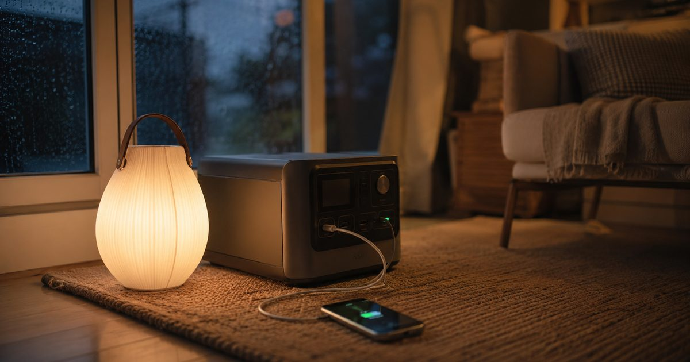
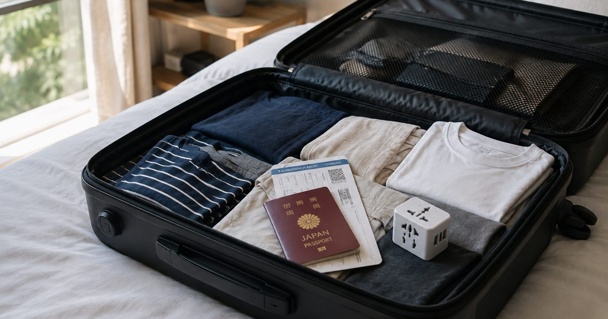
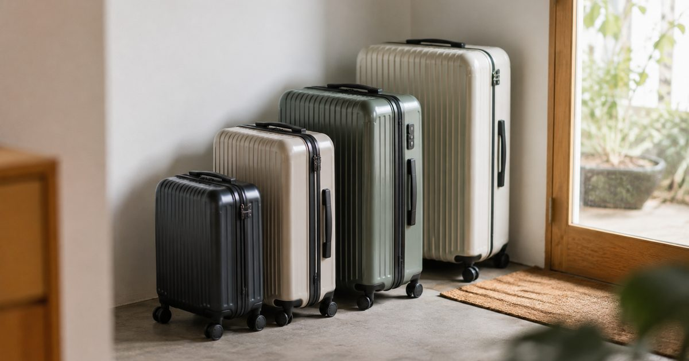

選ぶ、迷わないために。
テクノロジーから旅、グルメ、暮らし、健康まで。ジャンルを決めずに、日々気になったことをじっくり書き留めていくブログです。
新着記事
95件
台風シーズンの在宅防災ガイド 停電・断水に備える持ち物と対策【2026年版】
台風による停電・断水の長期化に備え、在宅避難を前提とした防災の考え方と、備えておきたいアイテムをまとめました。
ワイヤレスイヤホンおすすめ徹底比較 定番・ノイキャン・通話品質・防水など4選
定番コスパモデル・ノイズキャンセリング高機能モデル・Web会議向けモデル・スポーツ防水モデルの4台を、用途別に比較しました。
オンライン会議の音質改善完全ガイド 相手に聞き取りやすい声を届けるコツ
Web会議で「聞き取りにくい」と言われがちな人向けに、音質が悪くなる原因の見直し方と、マイク・イヤホン選びのポイントをまとめました。

海外旅行の持ち物・準備完全ガイド 出発前に確認したいチェックリスト【保存版】
パスポートの有効期限・電源プラグ・海外旅行保険など、出発前に確認したい準備をまとめました。

スーツケースおすすめ徹底比較 機内持ち込み・中型・大型・軽量など4選
機内持ち込みサイズ・中型サイズ・大型サイズ・軽量フレームタイプの4台を旅行日数別に比較しました。
在宅ワーカーの肩こり・腰痛対策完全ガイド 今日からできるセルフケア【保存版】
肩こり・腰痛が起きやすい理由と、姿勢の見直し・こまめな休憩などの対策をまとめました。
マッサージガンおすすめ徹底比較 肩こり・腰痛のセルフケアに4選
定番コスパモデル・静音多機能タイプ・コンパクトモデル・医療機器認証ブランドの4台を比較しました。
自宅でできる熱中症対策完全ガイド 室内での予防と応急対応【保存版】
室内でも起こる熱中症のリスクと、今日からできる予防・応急対応のポイントをまとめました。
携帯冷却グッズおすすめ徹底比較 首掛け扇風機・ネッククーラーなど4選
首掛け扇風機・ネッククーラー・ハンディファン・冷感タオルを、使い勝手と持続時間で比較しました。
初めての一人旅、持ち物完全ガイド 忘れ物ゼロにする準備リスト【保存版】
必須の持ち物チェックリストからパッキングのコツ、よくあるトラブル対策までまとめました。
モバイルバッテリーおすすめ徹底比較 大容量・軽量・PD対応など4選
大容量タイプ・超小型タイプ・USB-C PD急速充電対応・ワイヤレス充電対応の4タイプを比較しました。
おうちパン作り初心者ガイド 材料の選び方・失敗しないコツ【保存版】
材料選びの基本からよくある失敗と直し方まで、初めてのパン作りをサポートするガイドです。
ホームベーカリーおすすめ徹底比較 定番・多機能・コンパクトなど4選
定番コスパモデル・多機能タイプ・コンパクトモデル・お手入れ簡単タイプの4台を比較しました。
多頭飼いグッズ徹底比較 ペットゲート・見守りカメラなど4選
距離の取り方と見守り方を軸に、ペットゲート・見守りカメラ・サークル・食器スタンドを比較しました。
キャットフードおすすめ徹底比較 年代・体質別4選
泌尿器ケア・嗜好性重視・子猫用・シニア用の4タイプを、年齢や体質別に比較しました。
猫トイレ用品徹底比較 トイレ本体・消臭剤・マットなど4選
カバー付きトイレ・システムトイレ・消臭スプレー・砂取りマットを、ニオイ対策の観点で比較しました。
ドッグフードおすすめ徹底比較 年代・犬種サイズ別4選
犬種別フード・小型犬用・大型犬子犬用・シニア犬用の4タイプを、ライフステージ別に比較しました。
犬のしつけグッズ徹底比較 クリッカー・ロングリード・おやつポーチなど4選
タイミングよく褒めるを助けてくれる定番グッズを、使う場面別に比較しました。
犬猫の多頭飼いガイド 相性の見極め方と迎え方のコツ【保存版】
先住のペットとの対面はいきなりはNG。段階を踏んだ迎え方とケンカを防ぐ環境づくりをまとめました。
キャットフードの選び方完全ガイド 年齢・体質・好み別の選び方【保存版】
総合栄養食の見分け方からライフステージ別の選び方、ドライとウェットの使い分けまでまとめました。
猫のトイレトレーニング完全ガイド 覚えてくれない時の見直しポイント【保存版】
猫は本来トイレを覚えやすい動物。うまくいかない時に見直したい5つのポイントをまとめました。
ドッグフードの選び方完全ガイド 年齢・犬種別に失敗しない選び方【保存版】
総合栄養食の見分け方から年齢・犬種サイズ別の選び方、フードの切り替え方までまとめました。
子犬のしつけ完全ガイド トイレ・「待て」「おいで」の教え方【保存版】
最初の数ヶ月が肝心な子犬のしつけ。トイレ・待て・おいでの教え方と困った時の対処法をまとめました。
うずら飼育グッズ比較｜初心者向けケージ・専用フードおすすめ4選
床面積の広さと産卵期の栄養バランスを軸に、ケージ・フード・保温器具を比較しました。
観賞エビ飼育グッズ比較｜初心者向け水槽・水質調整剤おすすめ4選
水質の安定しやすさを軸に、水槽・フード・水質調整剤・フィルターを比較しました。
ヘビ飼育グッズ比較｜初心者向けテラリウム・保温器具おすすめ4選
脱走のしにくさと温度管理を軸に、テラリウム・保温器具・湿度管理用品を比較しました。
フクロモモンガ飼育グッズ比較｜初心者向けおすすめ4選
縦の運動スペースと保温性を軸に、ケージ・ポーチ・保温器具・フードを比較しました。
モルモット飼育グッズ比較｜初心者向けおすすめ4選
床面積の広さと栄養バランスを軸に、ケージ・フード・牧草入れ・爪切りを比較しました。
【W杯観戦記】アルゼンチン3-2エジプト。深夜1時、2点差から目撃した「王者の15分間」
メッシのPK失敗から始まった深夜の絶望が、後半の15分間で歓喜に変わるまでの観戦記録です。
うずらを迎える前に 準備すること完全ガイド【保存版】
ほぼ毎日卵を産んでくれる魅力の一方、鳴き声対策は必須。性別選びや飼育環境のコツをまとめました。
【2026年版】一人暮らしで本当に買ってよかったAmazon商品10選
数年の失敗買いの末に生き残った、「壊れたら即買い直す」と断言できる10個だけを正直にまとめました。
Amazonで買える「2,000円以下なのに生活が変わる」神アイテム15選
キッチン・風呂・収納・デスクの4ジャンルから、「なぜ今まで買わなかったのか」と後悔するレベルの15個。
在宅ワーク歴3年が厳選！Amazonで買うべきデスク周り便利グッズ12選
整形外科の待合室から始まった3年間の試行錯誤。腰痛・肩こり・集中力切れに効いたものだけを紹介します。
AIとブログを量産していたら、たった1文字のせいで表示が崩れた話
生成AIとスクリプトで記事を量産する仕組みを作っていたら、思わぬ落とし穴にハマった実体験です。
猫用おもちゃおすすめ比較 留守番用から一緒に遊ぶタイプまで
自動レーザー・電動またたび魚・定番羽根じゃらし・ボールトラックを比較しました…
観賞エビを迎える前に 準備すること完全ガイド【保存版】
水質の急変に弱い観賞エビ。水槽の「立ち上げ」と丁寧な水合わせが成功のカギです。
ヘビを迎える前に 準備すること完全ガイド【保存版】
鳴かず匂いも少ないヘビ。温度勾配づくりと脱走対策の基本を初心者向けにまとめました。
子犬を迎えて最初の1週間、本当に必要だったものだけ書く
張り切って揃えたグッズの半分は使わず、逆に「これがなかったら詰んでいた」というものがありました。
自動給餌器おすすめ4選を徹底比較【2026年版】
コスパ重視・スマホ連動・大容量・コンパクト。生活スタイル別の選び方を整理しました。
犬用関節サプリメント比較 グルコサミン配合4選
ベッツワン・わんこの歩み・パーフェクトペットケア・DakPetsを比較しました…
ペット用自動給水器おすすめ比較 循環式で水分摂取量アップ
Anker Eufy・GEXピュアクリスタル・PETKIT・Drinkwellを比較しました…
フクロモモンガを迎える前に 準備すること完全ガイド【保存版】
完全な夜行性で群れを好む有袋類。生活リズムに合わせた迎え方のコツをまとめました。
モルモットを迎える前に 準備すること完全ガイド【保存版】
鳴き声で気持ちを伝えてくれるモルモット。ビタミンC補給とコミュニケーションのコツをまとめました。
猫のトイレ砂、結局どれがいいのか比較して分かったこと
鉱物・紙・木・シリカゲル。それぞれ試して感じた、掃除のしやすさと猫の反応の違い。
猫砂 全4タイプ徹底比較｜掃除のしやすさ・コスト・消臭力
鉱物系・紙系・木系・システムトイレ用を同じ基準で採点し、比較表にまとめました。
犬用知育トイ・おもちゃ比較 留守番対策にもおすすめ4選
コング・ノーズワークマット・パズルフィーダー・音の出るおもちゃを比較しました…
キャットタワーおすすめ比較 突っ張り・据え置き・木製4タイプ
突っ張り式・木製コンパクト・据え置きスリム・デザイン系の4タイプを比較しました…
犬用ケージ・サークル比較｜サイズ別おすすめ4選
体格・設置スペース・デザインで4タイプを比較し、サイズ別におすすめを整理しました。
カメを迎える前に 準備すること完全ガイド【保存版】
必要な準備・費用の目安・紫外線ライトの重要性・お迎え初日の過ごし方をわかりやすくまとめまし…
共働きで留守番が多いわが家が、自動給餌器を導入した理由
「かわいそう」と思われるのが嫌で先延ばしにしていた自動化。実際に使って変わったこと。
2026年、仕事の進め方を変える生成AIツール活用術
文章作成から情報整理まで。日々の業務に生成AIをどう組み込むか、実践的な使い方をまとめました。
ペット用空気清浄機 比較｜脱臭力・静音性・電気代で選ぶ
脱臭力・静音性・設置スペース・電気代で4タイプを比較しました。
レオパ(ヒョウモントカゲモドキ)を迎える前に 準備すること完全ガイド
必要な準備・費用の目安・温度管理・お迎え初日の過ごし方をわかりやすくまとめました…
犬の留守番中の無駄吠え、遠回りせずに落ち着いた話
しつけ本の内容を全部試す前に、環境を変えるグッズから見直したら反応が変わりました。
インコ・小鳥を迎える前に 準備すること完全ガイド【保存版】
必要な準備・費用の目安・放鳥時の安全対策・お迎え初日の過ごし方をわかりやすくまとめまし…
シニア犬・シニア猫と暮らして、変えてよかった環境の話
若い頃と同じお世話のままでは負担が増えていく。年齢に合わせて見直したものを記録しました。
京都で巡る、静かな古寺と紅葉スポット案内
観光客で賑わう名所を少し離れて、静かに歴史と向き合える京都の寺院を集めました。
ハリネズミを迎える前に 準備すること完全ガイド【保存版】
必要な準備・費用の目安・温度管理・お迎え初日の過ごし方をわかりやすくまとめました…
犬用リード・ハーネス比較｜引っ張り癖に強いのはどれ？
体格と散歩の悩み別に4タイプを比較し、選び方を整理しました。
フェレットを迎える前に 準備すること完全ガイド【保存版】
必要な準備・費用の目安・脱走対策・お迎え初日の過ごし方をわかりやすくまとめました…
自宅で楽しむ、本格スペシャルティコーヒーの淹れ方
豆選びから抽出まで。特別な道具がなくても、家で驚くほど美味しい一杯を淹れるためのコツ。
シニア犬・シニア猫との暮らし方ガイド 老化のサインと備え完全版
老化のサイン・生活環境の見直し・備えておきたいグッズをわかりやすくまとめました…
うさぎを迎える前に 準備すること完全ガイド【保存版】
必要な準備・費用の目安・部屋の安全対策・お迎え初日の過ごし方をわかりやすくまとめまし…
熱帯魚・アクアリウムを始める前に 知っておきたいこと完全ガイド
必要な機材・水槽の立ち上げ方・費用の目安をわかりやすくまとめました…
朝の30分を変えるだけで、一日の質が変わる理由
特別な努力をしなくても続けられる、小さな朝の習慣づくり。私が実際に試して続いているものだけを紹介します。
初めてハムスターを迎える前に 準備すること完全ガイド【保存版】
必要な準備・費用の目安・ケージの置き場所・お迎え初日の過ごし方をわかりやすくまとめまし…
初めて犬を迎える前に 準備すること完全ガイド【保存版】
必要な準備・費用の目安・部屋の安全対策・初日の過ごし方を、順番にわかりやすくまとめまし…
初めて猫を迎える前に 準備すること完全ガイド【保存版】
必要な準備・費用の目安・部屋の安全対策・初日の過ごし方を、順番にわかりやすくまとめまし…
睡眠の質を上げるために見直したい7つの習慣
「寝ても疲れが取れない」を卒業するために。研究や専門家の知見をもとにした、無理なく続けられる工夫。
うさぎ用ケージ・トイレ用品比較｜おすすめ4選
マルカン・三晃商会・GEXなど、掃除のしやすさ・広さ・においで比較しました。
フェレット飼育グッズ比較｜初心者向けおすすめ4選
スターターセットから多頭飼い向けケージまで比較しました。
ハリネズミ飼育グッズ比較｜ケージ・保温器具のおすすめ4選
温度管理が命に関わるハリネズミ飼育。観察のしやすさや保温性で比較しました。
ペット防災・同行避難グッズ比較｜おすすめ4選
持ち運びやすさ・備蓄期間・導入コストで比較しました。
犬の車酔い対策グッズ比較｜ドライブが楽になるおすすめ4選
ドライブボックスからサプリメントまで、効果の出方で比較しました。
猫の脱走防止ネット・ドアガード比較｜設置場所別おすすめ4選
玄関・網戸・つっぱり棒タイプなど、設置場所別に比較しました。
シニア犬・シニア猫用おむつ比較｜介護のしやすさで選ぶおすすめ4選
装着のしやすさ・漏れにくさ・交換のしやすさで比較しました。
ペットの熱中症対策グッズ比較｜夏を乗り切るおすすめ4選
冷却効果・持続時間・使いやすさでシーン別に比較しました。
【正直レビュー観点】猫用自動トイレってどうなの？人気3機種＋定番を比較
PETKIT・CATLINK・ペットセーフの自動トイレを比較。掃除ストレスから解放されたい飼い主さん向け…
ハムスターの飼育グッズ、最初に買うべきはコレ 静音重視の4選
三晃商会サイレントホイールやルーミィなど、夜中のカラカラ音に悩まされないハムスター飼育グッズを厳選しまし…
セキセイインコのケージ選び、HOEIが定番って本当？ サイズ別おすすめ4選
手乗りインコの定番HOEI 35手のりから465インコまで、鳥かご選びの基準とお世話グッズをまとめました…
猫の爪切り・お手入れグッズ比較 暴れる子でも安心なおすすめ4選
ペティオ プレチャンスや貝印など、猫の爪切りを深爪防止・使いやすさで比較しました。…
アクアリウム、何から買えばいい？ 初心者セットの正解4つを解説
水作エイトコアやテトラミンなど、熱帯魚・金魚飼育を始める人がまず揃えるべき定番アイテムを紹介します。…
レオパ（ヒョウモントカゲモドキ）飼育セット これだけ揃えればOKな4選
レプタイルボックス・暖突・ウェットシェルターなど、レオパ飼育の定番装備を初心者向けにまとめました。…
犬の歯磨き、続かない人へ ハードル低い順に試すデンタルケア4選
PETKISS歯みがきシートからグリニーズまで、嫌がる犬でも続けやすい順にデンタルケアグッズを並べました…
猫の爪とぎで家がボロボロ… 壁と家具を守る神アイテム4選
猫壱バリバリベッド、ガリガリサークルなど、猫が気に入る爪とぎと壁の保護グッズをセットで紹介します。…
うさぎの牧草、食べてくれない問題 チモシー選びの正解4つ
バニーセレクション・パスチャーチモシーなど、うさぎの主食となる牧草とフード選びのコツをまとめました。…
カメ飼育の基本セット 水換えがラクになる定番グッズ4選
テトラ レプトミン、GEXカメ元気フィルターなど、ミドリガメ・クサガメ飼育の定番アイテムを紹介します。…
デグー・チンチラの飼育グッズ 砂浴び＆回し車の定番4選
イージーホーム、メタルサイレント、ひかりデグデグなど、デグー・チンチラ飼育の定番アイテムをまとめました。…
犬用バギー・ペットカート お出かけがもっと楽しくなるおすすめ4選
AIRBUGGYからコンパクトタイプまで、シニア犬や暑い時期のお出かけに便利なペットカートを比較しました…
子猫の哺乳・ミルク育児グッズ 保護したその日から使えるおすすめ4選
ロイヤルカナン ベビーキャットや森乳サンワールドのワンラックなど、子猫の人工哺育で定番のミルク・哺乳瓶を…
猫の抜け毛対策ブラシ比較 換毛期を乗り切るおすすめ4選
ファーミネーターやフーリーなど、猫の抜け毛・毛玉対策の定番ブラシをタイプ別に比較しました。…
ペット見守りカメラ比較 留守番中の「見えない不安」を消すおすすめ4選
Furbo・Anker Eufy・TP-Link Tapoなど、ペット見守りカメラをおやつ機能・画質・価…
ベタ（熱帯魚）飼育スターターセット 初めてでも失敗しにくいおすすめ4選
GEXのベタ専用グッズなど、小さな容器でも飼いやすいベタの飼育セットを比較しました。…
カブトムシ・クワガタ飼育セット 夏を楽しむ初心者向けおすすめ4選
マルカン・フジコンなど、カブトムシ・クワガタの飼育に必要なマットやケースの定番セットを紹介します。…
メダカ・ビオトープ入門セット ベランダで楽しむおすすめ4選
GEXのメダカ元気シリーズなど、屋外でメダカを飼うビオトープ入門グッズを比較しました。…
該当する記事が見つかりませんでした。検索条件を変えてお試しください。